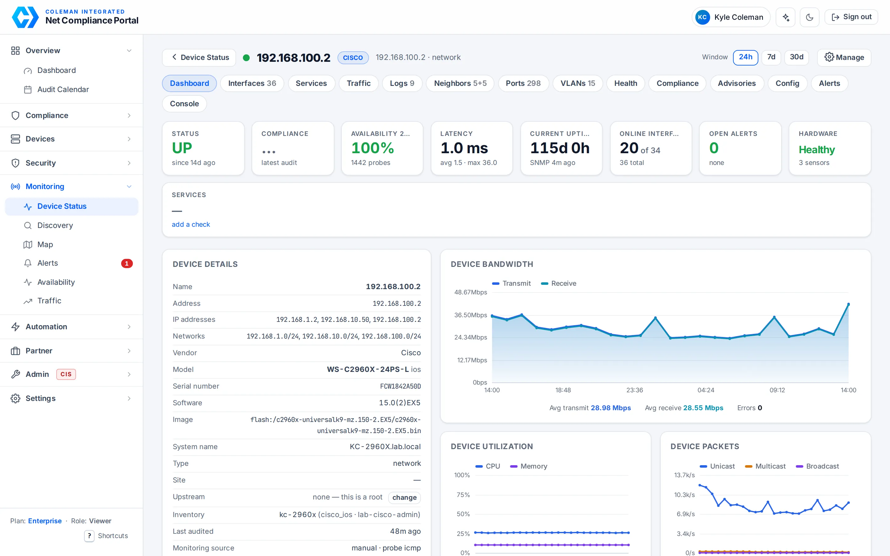
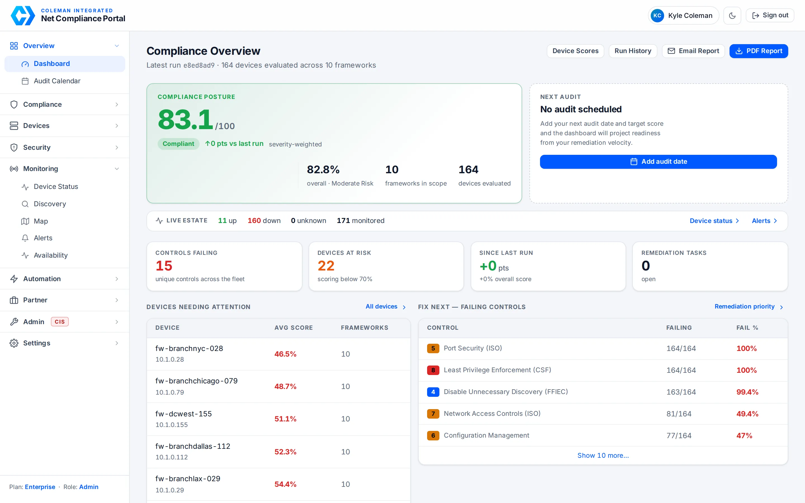
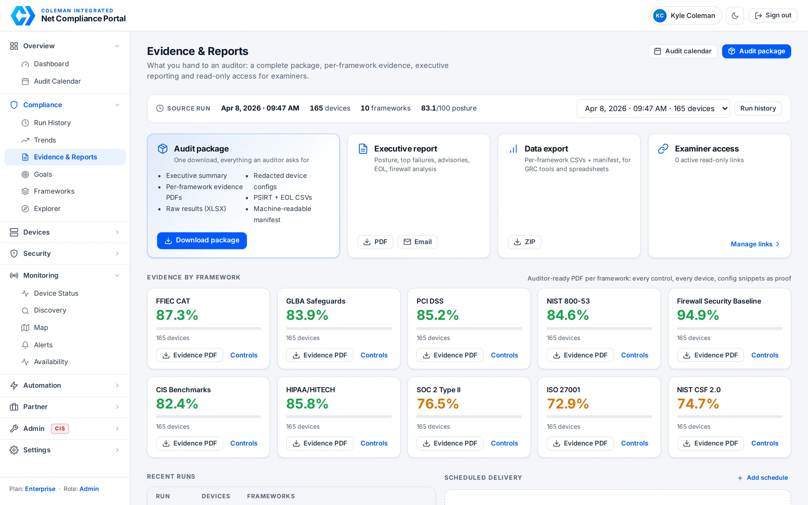
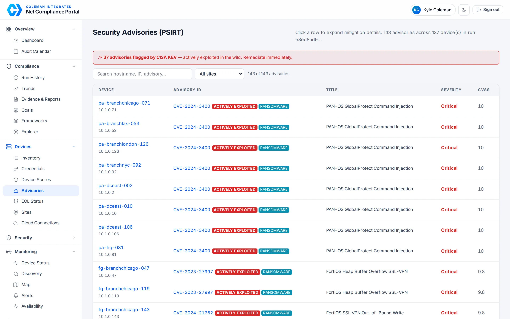
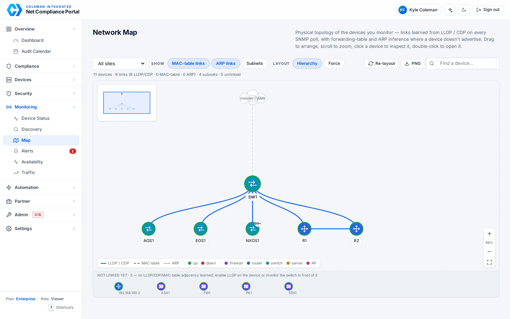

Monitoring • Compliance • Automation
One lightweight collector at each site does both jobs: 60-second monitoring with SNMP telemetry, alerting and a page per device — and continuous compliance scoring across 27 frameworks with drift detection, advisory matching and auditor-ready evidence. One agent, one portal, no VPN, no inbound firewall rules.
Built for teams running Cisco, Palo Alto, Fortinet, Juniper or Aruba estates with an audit in the next twelve months.

Device 360 — every device on one page: live status, telemetry, compliance scores, advisories and config history. Open the demo →
The portal
Light, fast and readable at a glance. Every screen answers one question: what needs fixing, what's the evidence, and where do we stand right now.

Severity-weighted posture, what changed since the last run, the controls failing most often and the devices dragging the score down — with the fix one click away.

One download with everything an auditor asks for: per-framework evidence PDFs, redacted configs, PSIRT and end-of-life CSVs, raw results and a machine-readable manifest. Read-only examiner links, scheduled delivery.

Vendor PSIRT feeds joined to the exact platform and software version on each device, flagged against CISA's Known Exploited Vulnerabilities and ransomware campaigns.

Topology learned from LLDP / CDP, forwarding tables and ARP on every SNMP poll. Click a device to inspect its links and neighbours; double-click to open its page.
Process
Three repeatable steps — no long consulting engagements, no black-box tooling.
We baseline your entire fleet — configs, firmware versions, PSIRTs, and drift — and deliver a prioritized risk report within days, not weeks.
AI‑generated remediation scripts fix findings and harden your fleet — with config backup, pre‑push verification, and rollback‑safe change windows.
Continuous monitoring, real‑time drift alerts, and board‑ready PDF evidence exports keep you perpetually audit‑ready.
Network Monitoring
Continuous visibility for switches, routers, firewalls, Linux and Windows hosts. Outbound-only from your site: the collector talks to our cloud, nothing talks to your network.
Every monitored host probed every 60 seconds (ICMP with per-OS TCP fallback). Debounced down/recovery alerts by e-mail, an alert log with acknowledgements, and 30 days of uptime and latency history per device.
Interfaces with 64-bit counters — throughput, utilisation, errors, packets — IP addresses and subnets, ARP neighbours, CPU and memory. SNMP v2c or v3 with credentials held in your own Key Vault, never on the device page.
Availability, latency, bandwidth, packets and CPU/memory charts; top interfaces; neighbours; the latest compliance scores, security advisories and end-of-life status; configuration backups with diffs — all on one Device 360 page.
Open a browser terminal to any device, brokered through your collector — no VPN, no jump host, no inbound ports. Admin-only, one-time session tokens, every session recorded and replayable for your auditors. Enterprise plan.
How your data is handled
The collector runs at your site and talks out to our cloud. Nothing connects in. No VPN, no jump host, no inbound firewall rules.
Device logins and SNMP credentials live in your own Azure Key Vault. The portal never shows them and the collector fetches them per scan.
Every audit package carries a SHA-256 for each file, redacted configs, an exceptions register with named approvers and expiry dates, and period evidence of operation.
Examiner links are scoped to one framework, expire on a date you set, and can be revoked in one click. Your auditor never needs an account.
Beyond the platform
Cisco, Fortinet and Palo Alto PSIRT feeds, CISA's Known Exploited Vulnerabilities and NVD, cross-referenced to the exact platform and software version on every device within 24 hours of publication.
Healthcare, finance, education, manufacturing, utilities, public sector and MSPs — the framework mappings are built in, and we've done the audits ourselves. About us →
Network and firewall design, segmentation and Zero Trust, cloud and identity, automation and integrations — scoped as a project, not a retainer. Scope a project →
Get a free network audit scoping call — no commitment, no sales pitch. Just clarity on where your gaps are.
Book your discovery call